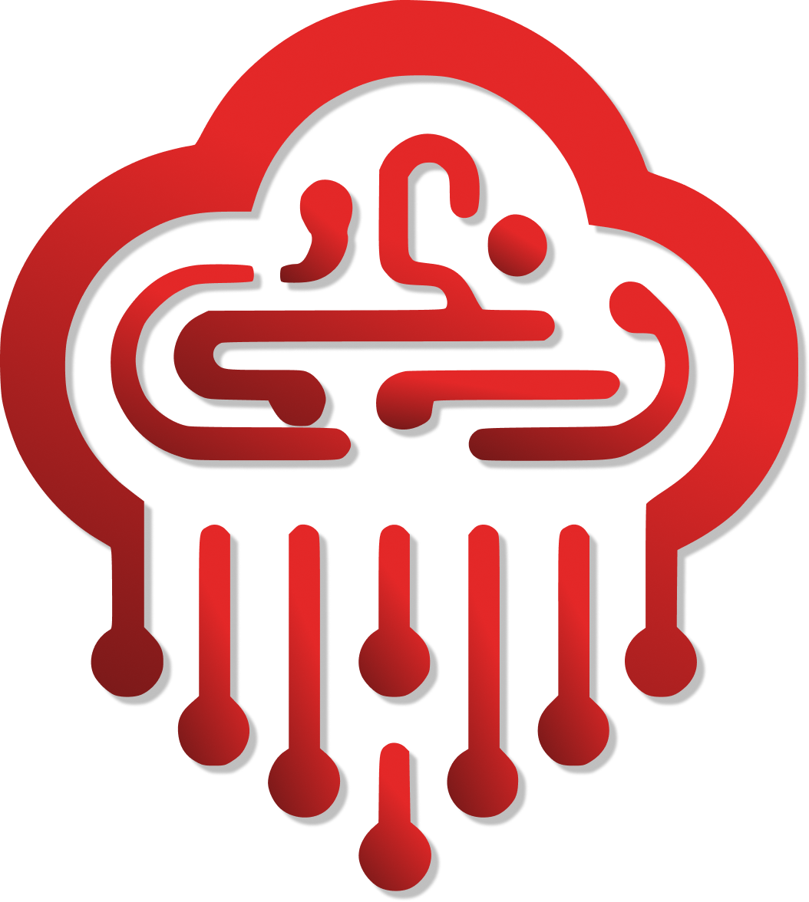

{{/*
  Copyright 2014 Team 254. All Rights Reserved.
  Author: pat@patfairbank.com (Patrick Fairbank)

  Root page and entry point to Cheesy Arena/Cyber Arena.
*/}}
{{define "title"}}Home{{end}}
{{define "body"}}
<div class="jumbotron" style="border-radius: 0; background-color: #111111; color: #d8d8d8;">
  
  
  
  <h2 style="color: #d8d8d8;">Bem-vindo ao Cyber Arena.</h2>
  <h5 style="color: #d8d8d8;"><b>Versão: 1.2 - MULTI GAME</b></h5>
  <hr/>
  <p>Use a barra de navegação no topo para configurar o evento, jogar e pontuar partidas, visualizar e imprimir relatórios,
    ou lançar displays.</p>
  <p>Para controle de partidas, vá diretamente para
    <a href="/match_play">Execução de Partidas</a>.</p>
  <hr/>
  <h5 style="color: #d8d8d8;"><i>Cyber Arena é uma versão altamente modificada do Cheesy Arena Lite (desenvolvido pela equipe The Cheesy Puffs #254).</i></h5>
</div>
{{end}}
{{define "script"}}{{end}}
